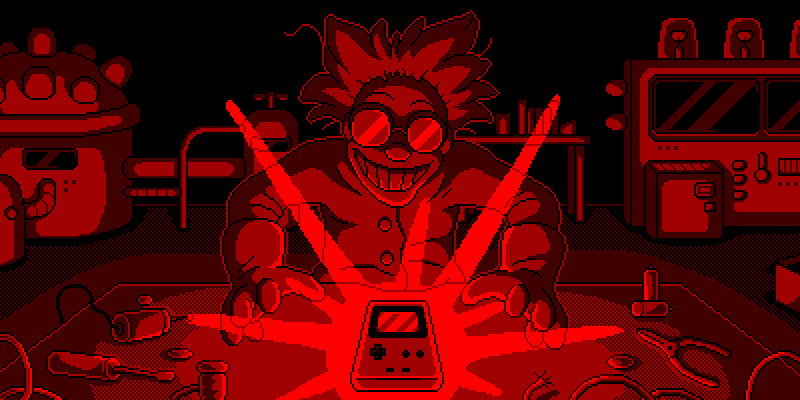
Credit: Nay
Mad science
The Game Boy Color introduced a host of improvements when it came out. It had a CPU that could run twice as fast as the older models, expanded Video and Work RAM, and true to its name gave games a splash of color. Perhaps the oddest addition, however, was a newly minted infrared port. The opaque black strip at the top of every GBC hides two little diodes underneath for sending and receiving IR signals. This curious feature allowed GBCs to communicate wirelessly over short distances. The same technology behind TV remotes could now power portable video games. At first glance, the IR port seems like something few developers would actually take advantage of. Most gamers probably only remember popular titles like Pokemon Gold, Silver, and Crystal utilizing it, but further research revealed that at least 26 GBC games used it for various purposes. Obviously enough, the GBC IR port transferred small amounts of data back and forth between Game Boys, but some of the other things developers came up verge on pure madness.
Virtual pet devices, accelerometer accessories, and even household lamps all used the GBC's IR sensing capabilities. Some of the GBC's most beautiful and bizarre gimmicks were made specifically for this new interface. Sadly, the current state of preserving these gameplay modes was not so good. In 2016, another emudev (LIJI32, author of SameBoy) and myself attempted to emulate the GBC IR port. While I had some success, I couldn't get a number of other games to work at all. Only Pokemon Gold, Silver, and Crystal worked via Mystery Gift. Other games refused to do anything or threw up error screens. Although this was before I began the Edge of Emulation articles, it marked the first time I was really interested in emulating something that had never been done before. Unfortunately, IR communications continued to taunt me no matter how much I tried back then. I had to put the idea of emulating the IR port on hold, figuring I'd come back one day and conquer it.
Fast forward about a year and some months later, and I still couldn't get it out of my mind. I'd finished initial support for Zok Zok Heroes' Full Changer but still hadn't touched anything else IR related. Even as I worked on other areas of emulation, it felt like I was walking away from something. I had come closer than anyone else after all. Quitting wasn't an option; in fact I'd say I had an obligation to finish what I started. At the beginning of 2018, I went back to my research and picked up where I had left off. The trail was just as cold as before, leaving me no clue about what was messing up IR communications in GBE+. I kept checking out every angle, every unknown quantity, anything I could get my hands on to debug. On top of not knowing how to get standard GBC-to-GBC IR communication running, I had to deal with all of those add-ons and items some games used. The 2nd Gen Pokemon games all supported the tamagotchi-like Pokemon Pikachu 2, and a similar device called the Pocket Sakura connected with Sakura Taisen GB. Games like Bomberman Max Red and Blue unlocked special stages with TV remotes and Chee Chai Alien even used ordinary desktop lamps for the bulk of its gameplay. How in the world was anyone supposed to reasonably emulate all of that stuff? Who in their right mind would tackle such a huge task? I mean, honestly, they'd have to be nuts.
Insanely easy
At first, I decided not to worry about all of the exotic forms of IR communication. A better starting point would have been getting simple, GBC-to-GBC transmissions to run. The only games that worked in the past were those 2nd Gen Pokemon titles. Getting that right was something of a surprise when I first fiddled with the GBC's IR port in 2016. Since no other games worked consistently, perhaps it was all a coincedence, dumb luck at best. Yet, as I went back over all the notes and tests I'd gathered since then, that line of thinking didn't add up. As far as I could tell the basics of IR emulation were correct in GBE+, and the code should have functioned perfectly in other games. I could get some games like Super Mario Bros. DX to successfully use the IR port, but it was sporadic and haphazard, failing more often than anything. There was just something missing in the overall picture, a variable that I just wasn't looking at hard enough.

So much fail.
The previous year, I had managed to get Donkey Kong Country working more or less flawlessly. The game allows players to trade black and white photos from an album. A while ago, I discovered that if I delayed network communications from one instance of GBE+ to another by a certain amount, the IR features in Donkey Kong would be emulated without a single problem. When I talk about these delays, I refer to a feature in GBE+ called "hard sync". The gist of hard sync is that each instance of GBE+ forcibly waits for the other one to run a specified amount of CPU cycles before allowing itself to run. This ensures that each instance of GBE+ is highly synced, although this comes with a speed penalty. At any rate, this introduces controllable delays between two emulated Game Boys when sending data like IR signals over networking, e.g. the IR signal could be delayed by the specified amount of CPU cycles necessary to sync. The amount of CPU cycles to wait before syncing is referred to as the "sync threshold" in GBE+.
Super small sync thresholds made Donkey Kong run very well, but they did nothing for every other game. However, eventually in 2017, I reworked some CPU timings in GBE+ to make Zok Zok Heroes and the Full Changer playable. As it turns out, that was the key to everything. When I started working on the GBC IR port again, I tried lowering the sync thresholds again. Lo and behold, suddenly game after game started communicating with minimal issues. So, there are two things going on here. The first is that CPU instructions need to be properly timed, no exceptions; that's pretty obvious when we're dealing with IR signals and measuring pulses that might only last a couple dozen or so microseconds. But what about the second factor, delaying some network communications by a small amount of time? How does that make things better?
Let's consider that in real life, receiving the IR signals is not instantaneous for the GBC. There are tiny delays between when the CPU writes to a certain MMIO register telling the IR light to come on, getting electricity to the IR components to light up, getting the IR light out of the GBC across a distance of a few centimeters, and getting the other GBC's IR sensor to acknowledge receiving a signal. As a result, many games seem to be programmed around this. If the IR signals come in too fast, they will refuse to establish a connection. I extensively tested this by setting a sync threshold of zero, meaning each emulated GBC in GBE+ runs for one instruction before syncing with its partner. As soon as an IR signal is sent on one end, the other would receive it. Needless to say, every game failed with that method. Instead, the magic number seemed to be 16 cycles as a sync threshold. All of this indicates that GBC-to-GBC IR communications are incredibly picky. An emulator can't be too fast or too slow and has to get timing just right within a very narrow window. So, solving this part of the GBC IR port was unexpectedly easy. All I really had to do was mess around with the sync threshold and everything just fell into place.
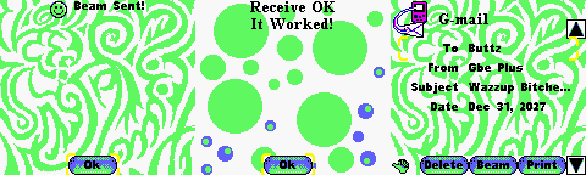
With proper sync thresholds, in GBE+ now you can exchange thoughtful messages with your best friends in Mary-Kate and Ashley: Pocket Planner!
Getting wacky
Normal GBC-to-GBC IR communications were up and running properly (with the exception of Pokemon TCG, more on that later) with a simple adjustment. After that, it was time to look at the more novel IR devices that transmitted data to the GBC. The first thing on my list was a TV remote. Most people familiar with GBC games know about Mission Impossible and its ability to record IR signals from a TV remote and play them back, basically transforming a small handheld gaming machine into a glorified channel changer. That's interesting, but from an emulation point of view, functionally useless. All an emulator would be doing is receiving random IR on-off signals, then sending back said random IR on-off signals; they wouldn't do anything unless the emulator itself is hooked up to an IR device. There were a couple of other games that used TV remotes, however: Bomberman Max Red and Blue. Certain bonus stages can only be unlocked with input from the TV remote. More specifically, the game just wants some sort of IR signal, so it can come from anything that generates an IR pulse. TV remotes just happen to be one of the most common items people would have on hand.
Emulating that was very straightforward; all GBE+ had to do was make up its own IR signals. The Bomberman games don't care about specifics. They don't even try to verify if it's a legit TV remote by analyzing the IR response. There are industry standards for remote signals, but all of that's irrelevant with these two games. The only requirement is for the GBC IR sensor to turn on, then turn off. As a formality, GBE+ creates 16 on-off IR pulses even though just 1 is likely sufficient. At any rate, doing that allows the special bonus stage to load. Admittedly, its a very small part of the game, and in the grand scheme of the GBC library, it's a particularly obscure feature. Nevertheless, even this tiny piece of gaming history deserves to be documented and emulated.
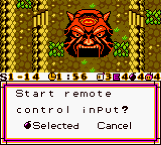 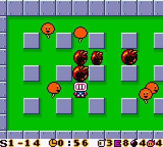
It's not much. You just blow up some balloons here.
So the TV remote was pretty tame. Where's all this talk of madness coming from? For my next goal, I zeroed in on a small device called the Pokemon Pikachu 2. For those unfamiliar, it was a "virtual pet" released alongside Pokemon Gold and Silver. It was the successor to the original Pokemon Pikachu, featuring new enhancements like a color display, and most importantly, an infrared port for external communications. The whole unit is basically a shiny pedometer; the more steps taken, the more "Watts" are produced. Players can give Watts to Pikachu to make it happy, they can send the Watts to someone else's Pokemon Pikachu, or they can send said Watts to Pokemon Gold, Silver, or Crystal to get items from Mystery Gifts. Unlike Mystery Gifts involving two GBCs, Mystery Gifts between a Pokemon Pikachu 2 and a GBC always produced consistent results depending on the level of Watts used. Some rare and valuable items could be generated without fail, and players didn't have to deal with the 5-times-per-24-hours limits imposed on GBC-to-GBC Mystery Gifts.
The goal here is to emulate the IR transmissions a Pokemon Pikachu 2 sends to the GBC, so all we need is to somehow record the IR pulses and feed them to GBE+. Like the Full Changer from Zok Zok Heroes, GBE+ just wants to know how long it needs to turn its IR sensor on and off, so there really isn't anything new or fancy that needs to be done. The question then is how best to approach the recording process? With Zok Zok Heroes, the Full Changer only generated a handful of pulses, and a simple ROM hack was enough to grab all the necessary data stored in RAM. The Pokemon games, however, were far more complex. Since GBC-to-GBC IR communications worked just fine at this point, I monitored what went on when two players tried to Mystery Gift each other. I easily observed hundreds of IR pulses going back and forth between each game, accompanied by hundreds of writes to various RAM locations, and then even overwriting those ones some time later. Whatever was going on was something I couldn't stare at for a few seconds and hope to figure out.
A ROM hack looked to be out of the question. Remember, timing is everything with IR communications; putting my own code on top of the Pokemon games in the wrong places would have added CPU cycles, potentially causing the Mystery Gift to fail. The ideal situation for a ROM hack would be to wait for all of the IR transmissions to finish, then find out where the game analyzes it and just grab any raw data (in the form of IR on-off delays). The Pokemon games didn't seem to allow any of this, since evidently they dynamically process the raw data before it stays in RAM for too long. Abandoning the ROM hack left me with few options. I contemplated trying get some kind of video footage of a live transfer, but high-speed IR sensing cameras aren't exactly something I could readily get my hands on. Even then, only very specialized camera setups could possibly record IR pulses measured in microseconds, probably the kind you find at government funded science labs. I started thinking, "What could receive and record IR signals just as fast as a GBC could send them?" The answer, unsurprisingly, was another GBC.
So crazy, it just might work
Problem: Intercept IR communications between the Pokemon Pikachu 2 and a Game Boy Color. Solution: Record IR communications with a second Game Boy Color. As soon as this thought came to mind, and I immediately wondered how in the world would that work? The Pokemon Pikachu 2 and the primary GBC had to be very close to correctly send IR signals. How would another GBC enter into the picture and snoop in on what the Pokemon Pikachu 2 was sending? The very idea sounded sketchy, nevertheless, I went to work making a new homebrew ROM specifically designed to record IR signals from any source. The old one I used for Zok Zok Heroes was pretty clunky, so I programmed another with better features. This one could store and delete multiple recordings, and even came with fancy messages telling me when the IR signals stopped. It's rather nifty, if spartan in overall presentation.
Thankfully, I did have two GBCs on hand (one from my childhood, another recently bought from Goodwill for $8) so I could begin testing right away. To start off, I did transfers of 1 Watt from the Pokemon Pikachu 2 to Pokemon Crystal's Mystery Gift. The Pokemon Pikachu 2 has a small plastic belt clip on the back, which angles it up slightly, so it's not eactly parallel to a surface when set down. The IR transmitter is pointed just a little bit into the air, not enough so that it can't line up with the GBC running a Pokemon game, but possibly just high enough to expose the IR light to a second GBC. All I had to do to record the IR session was hold the second GBC running my homebrew while the Pokemon Pikachu 2 and Crystal used Mystery Gift normally. I still had my doubts about everything; I mean, there was no way something this convoluted could actually succeed, right?
The first few attempts seemed hopeless. The homebrew ROM managed to grab some IR signals, saving them as on-off delays. Each delay was just a loop of code with a counter. Using that counter, it was possible to figure out the approximate number of cycles between each pulse. With that information, GBE+ simply needs to turn its emulated IR sensor on and off based on these cycles. It worked for the Full Changer in Zok Zok Heroes, and there shouldn't have been any issues with the Pokemon Pikachu 2. Unfortunately, all of the recorded delays produced a communication error message in Pokemon Crystal's Mystery Gift. I kept taking multiple readings, grabbing close to 6 or 7 sets of data. I noticed that most of the earlier results had different amounts of on-off delays. Some were less than 50, some were about 200, and some were much more than that. This puzzled me; I was constantly transferring 1 Watt, so the number of IR pulses should have been constant as well. I surmised that something was going wrong with the recording, i.e. maybe the angle or distance of the second GBC was wrong, so garbage on-off delays were collected. On a hunch, I figured that any correct results would have to be the same length, so I looked for those while excluding the rest. Thankfully, the last two recordings had matching sizes (2007 on-off delays); the first one was no good, but the second one...
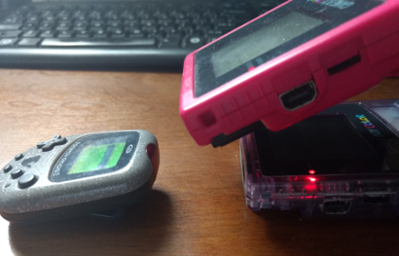 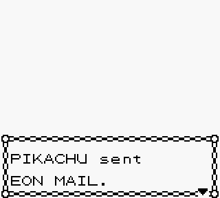
Yeah, that'll never work... Oh shi- It worked!
To say I was pretty blown away is a bit of an understatement. I seriously thought this method was too farfetched to actually go anywhere, but for once one of my loony schemes actually paid off. Now for the first time ever, we were able to emulate the Mystery Gift function as if using a Pokemon Pikachu 2. After some more messing around and a bit of practice, I could get good data without much effort. The second GBC had to be tilted just right, being neither too close nor too far from the Pokemon Pikachu 2. I quickly started collecting more Watts and doing more transfers; soon enough I had a growing database for GBE+ to use. Currently, GBE+ supports emulating 1W, 100W, 200W, 300W, 400W, and 500W transfers with Pokemon Crystal. It takes a while to gather Watts (lots of shaking, or by playing a card-based guessing game), so more will come eventually. Pokemon Gold and Silver seem to use slightly different data, so those need to be cataloged separately.
With the Pokemon Pikachu 2 conquered, it was time to move on to the Pocket Sakura. It's pretty much a copy+paste job of the Pokemon Pikachu 2, except it's pink all over and is only compatible with Sakura Taisen GB (the first one, not the second one strangely). Interestingly enough, the game and the Pocket Sakura were made by Media Factory, the same folks behind Zok Zok Heroes and the Full Changer; it's fair to say these people know a thing or two about using infrared. I'd hesitate to call the Pocket Sakura a "virtual pet", however. Rather than feeding Sakura and playing with her to raise your level of friendship (which would be weird), you take Sakura to different locations around the world. Travel is done via steps counted by the pedometer. Thankfully each destination is only a few thousand steps or so instead of actual miles. Sakura stops at each place and has conversations with other characters from the GBC game. Once she rests at a location, the pedometer will convert steps into "Points" similar to the Pokemon Pikachu 2's Watts. Points can be transferred back to Sakura Taisen GB to do... something. I haven't translated the relevant part of the manual, as the text is pretty kanji-heavy. At any rate, it wasn't difficult to navigate the menus and initiate Point transmissions, so with my homebrew ROM I captured more IR pulses using the same technique described above.
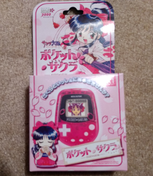 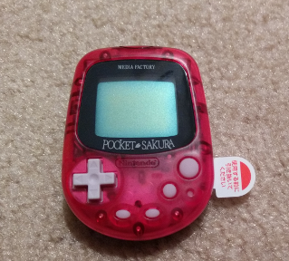 
The seller I bought this from wasn't joking, it was pretty much mint. The original battery tab was still there. This particular Pocket Sakura then booted up for the first time ever.
The Pocket Sakura took a lot more fussing than the Pokemon Pikachu 2. Once again, more garbage data came into my homebrew ROM, and I could only tell which entries were valid by matching their sizes. Once I settled on a given transfer length, 1607 on-off pulses, I passed the number of cycles onto GBE+. As expected, the transfer emulated perfectly, and from there I built up yet another database.
Out of my mind. Out of this world.
Emulating the Pokemon Pikachu 2 and Pocket Sakura's IR communications was definitely an adventure of sorts, but my quest wasn't yet complete. A peculiar game known as Chee Chai Alien remained. Chee Chai Alien, made by Creatures Inc, lets players catch so-called "Chaliens" using the GBC's IR port and a plastic clip-on that is supposed to enhance light detection. Apparently dark matter is disappearing from outer space and appearing on earth because Chaliens come to our planet carrying it. Chaliens arrive here via light traveling the cosmos. The goal is to aim the GBC at a light source (not fires, and definitely not train or car lights, the manual specifically says these are no-nos) and eventually a Chalien will appear. You can capture them, extract the dark matter to send back into space, and raise your Chaliens in a little bug cage. The game is fascinating because it's a rumble cartridge and probably uses the IR port more than any other game. In fact, the game's unplayable on anything but a GBC; it will display error messages when trying to boot from older Game Boys or the GBA.
Getting Chee Chai Alien to work in an emulator doesn't take anything special really. For example, this game has been perfectly playable in VBA-M since forever. Chee Chai Alien constantly checks the status of the IR light by resetting it before reading. In doing so, it can keep track of whether or not the GBC is near light, and that affects the percentage the game draws onscreen when players try to collect Chaliens. If an emulator doesn't emulate anything related to the IR port, such as returning zero every time the IR port's MMIO register is read by the CPU, this fools the game into thinking there is constant IR light hitting the sensor. The IR port's MMIO register has a single bit that determines the status of the light sensor, with "1" being OFF and "0" being ON. So, some emulators inadvertedly play this game just fine. In GBE+, the emulator only needs to set that bit in the MMIO register to 0 and make sure it never changes. With that, Chee Chai Alien reports 100 percent levels of light when scanning for Chaliens.
While this method works, it's actually a little boring. Players always get the maximum levels of light in the game without having to lift a finger. Half the fun in using the IR port on real hardware is trying to get the sensor placed appropiately. It looks easy in the commercials, but in my testing Chee Chai Alien was pretty fickle with light sources, even with the clip-on. I decided to spice things up and make an "interactive" mode. Here, GBE+ forcibly emulates the IR sensor as if it were turned on when the user presses certain input. After a brief period of time, however, it turns off. This forces players to constantly engage with the emulator to obtain high percentages of light detection. Perhaps it seems a little silly to go through all of that effort, but it does maintain a bit of the game's original charm.
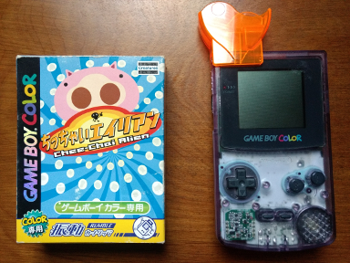 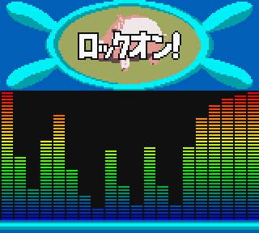
Loose screws
While this article is largely a story of triumph, not everything went according to plan. Earlier, I mentioned the Pokemon TCG game not working. This is due to some special programming going on under the hood. Most games have both Game Boys waiting to receive signals when initializing GBC-to-GBC IR communications. Generally, one side will act first by pressing the A button which then sends IR pulses as a handshake with the other unit. From there, the two GBCs start flashing IR light at each other. Basically, both sides are inactive until user input on one end begins the session. Pokemon TCG doesn't work like that however. Instead, both sides need to press A at nearly the same moment. For a very tiny frame of time, the GBCs continually send out a few IR pulses, then switch to checking their IR sensors to see if the other side has sent anything. After that, they're supposed to sync up if they made contact. One weird thing I figured out by diving into the game's assembly is that both sides can't press the A button too close together or else they won't sync. The game actually depends on one side being just a little faster or slower than the other. If not, both sides simultaneously send IR pulses and then check the IR sensor, meaning neither one gets the message. It's like juggling with a partner, but all of sudden your balls start colliding in midair rather than landing into your friend's hand.
It's a somewhat odd setup for IR communications, and Bomberman Max Red and Blue execute the same concept when trading Charaboms or battling with them. I have some clues as to why these games chose this style of IR transmission. Pokemon TCG can perhaps be explained by the fact that the Japanese version was originally designed around different infrared communication hardware, the HuC-1 memory bank controller, a cart with IR diodes built-in. Non-Japanese versions of Pokemon TCG were rewritten to use the GBC's native IR hardware instead. The strange IR protocol in Pokemon TCG might have been standard operating proceedure for the HuC-1, so it was later carried over to the GBC's IR port. Additionally, Pokemon TCG 2 likely just copied the GBC IR code from the non-Japanese versions of the first game. There's further evidence for this theory when looking at the Bomberman games. The developer, Hudson Soft, was the original creator of the HuC-1 cartridge, and they leveraged it extensively for their "GB KISS" games. After the GBC debuted, the HuC-1 was obselete for the most part, but Hudson Soft probably brought over the same programming practices they'd been using for years. "If it ain't broke, don't fix it" seems to be the theme. This all remains conjecture, as I've yet to fully investigate or emulate the HuC-1's IR capabilities. Another tale for another day.
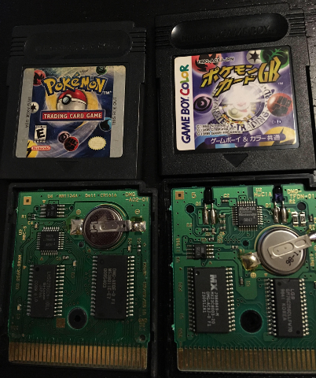
Left: Pokemon TCG (USA). Right Pokemon TCG (JPN). Note the USA version uses the GBC's native IR port. The Japanese version uses the HuC-1 with IR hardware embedded in the catridge.
Credit: /u/FurnaceFuneral
Digressing, one issue here is getting both emulators to trigger the A button at around the same time. GBE+'s core is flexible enough to allow this with netplay, so the necessary modifications aren't drastic. However, I've yet to figure out why the timing fails. When testing experimental builds of GBE+ that simulate an A press on one side followed by another simulated A press on the other some cycles later, everything goes smoothly until both get stuck in a loop waiting for the other one to send an IR signal. It's that juggler analogy again, except each pauses for the other to throw the ball, and neither blinks. Perhaps the amount of cycles is incorrect. It warrants further debugging in the future, but for now I'm finished with GBC infrared emulation. I'll definitely revisit the problem for sure, but at present I'm pretty proud to have spread compatibility in GBE+ to cover most IR-enabled games.
The next white whale
And with that, the madness ends. The sheer amount of creativity game developers put into the GBC's IR port is staggering. The hardware itself wasn't even on the market for 2 and a half years before the GBA came and stole the show. With the arrival of next generation Game Boy hardware, the IR port faded into obscurity, only returning nearly a decade later on the 3DS. There's some evidence that GBA prototypes intended to keep the IR port, however Nintendo ultimately decided against it. In retrospect, native infrared support lasted but a brief span of time, occupying a very small slice of Nintendo's handheld history. Nevertheless, it gave us a surprising number of unique games along with some new and extraordinary ways of interacting with them. The products surrounding infrared-enabled games may seem like one-trick toys to some, but that does not mean they should be forgotten. The end-goal of video game preservation through emulation should be to recreate every experience of the original console, no matter how small, insignificant, or just plain weird it looks.
As I close this article, I've already started work on my next project, and progress appears to be decent so far. Like I mentioned back in December when I finished support for the DMG-07, I've had a bunch of rare and unusual Game Boy hardware sitting on my desk for a while. Dealing with all of this infrared madness took up a good chunk of time, but I'm finally moving onto something that's intrigued me ever since I learned it existed. If everything goes according to plan, it's going to make a big splash, like it could really make some waves. There are still plenty more "white whales" of Game Boy emulation that I need to tackle, and this one might just literally send me into uncharted waters. As usual, I don't want to spoil the surprise, but if you haven't guessed it already, pay no attention to anything fishy about these last few sentences.